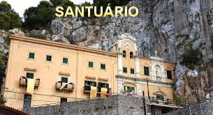
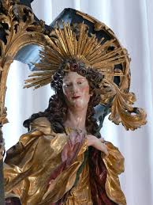
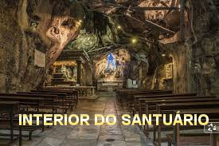
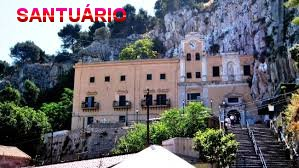
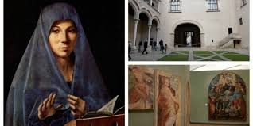
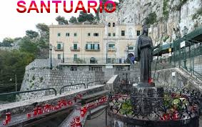
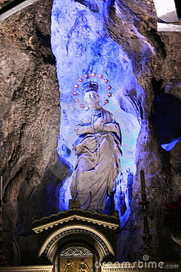
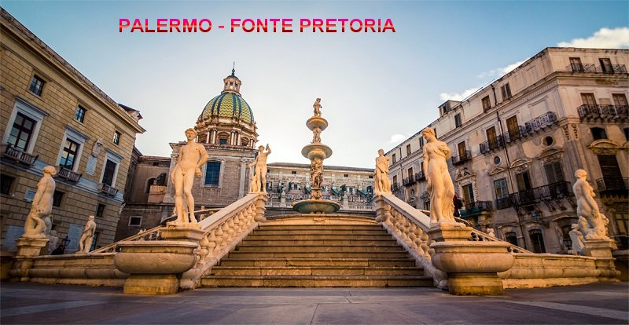

"NOTÍCIAS COMPLEMENTARES"
Palermo é a maior cidade da Ilha Sicilia, situada ao sul da Itália. Por sua beleza e admiráveis construções, é considerada a "Jóia do Mediterrâneo".
Com mais de 2.700 anos de existência, a cidade foi fundada pelos fenícios e denominada pelos antigos gregos de "Panormus". Esteve sob o domínio árabe por mais de 200 anos, realidade que se pode apreciar numa quantidade notável de Igrejas e prédios no estilo otomano. Depois de uma longa história tornou-se a Capital do Reino da Sicilia e se uniu ao Reino de Nápoles, formando as duas cidades principais da Sicilia, até a unificação da Itália.
Os sicilianos são muito expansivos por sua própria natureza, sendo um povo de grande expressão religiosa. Santa Rosália é carinhosamente denominada por eles de "La Santuzza", e é a padroeira da cidade de Palermo.
"IMAGENS"










"CONVITE"
Este Site foi construído pelo Apostolado dos Sagrados Corações. Clique aqui ou no endereço abaixo para visitar o nosso PORTAL. Nele encontrará uma apreciável quantidade de Sites sobre o CRIADOR, o ESPÍRITO SANTO, JESUS DE NAZARÉ, sobre NOSSA SENHORA, os SANTOS ANJOS, e também, Sites que apresentam a Vida e Obra de diversos SANTOS. Todos eles elaborados com muito amor e dedicação, fundamentados na Sagrada Escritura, na Tradição Cristã, na Vida e Obra dos Santos e nas Manifestações Sobrenaturais, sobretudo, com a intenção de somente informar a Verdade.
http://www.apostoladosagradoscoracoes.com/
NOSSO E-MAIL
Desejando comunicar-se conosco, por favor utilize o E-mail abaixo:
contato@apostoladosagradoscoracoes.com.br
FIRMAS QUE DIVULGAM O SITE